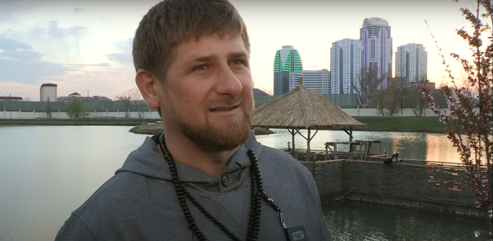

Di tengah hiruk-pikuk kota besar, di antara gedung tinggi dan jalan yang dipenuhi orang berlalu-lalang, ada sebuah kisah yang mengajarkan kita tentang pentingnya menghargai sesama. Suatu hari, seorang pria berjalan melewati trotoar yang ramai. Di sudut jalan, ia melihat seorang laki-laki yang tampak terlantar duduk sendirian. Pakaian lusuh dan wajah lelah membuatnya terlihat seperti seseorang yang telah kehilangan arah hidup. Namun, ada sesuatu yang berbeda — senyum hangat yang tetap terpancar di wajahnya.
Dengan rasa ingin tahu, pria itu mendekat dan berkata dengan sopan, “Sir, bolehkah saya bertanya?”
Orang yang tampak terlantar itu menoleh, tersenyum, dan menjawab dengan ramah, “Silakan.”
Percakapan singkat pun dimulai. “Mengapa Anda terlihat begitu tenang dan ramah, padahal sedang dalam keadaan seperti ini?” tanya pria itu.
Sambil tersenyum, orang tersebut menjawab, “Saya memang sedang terlantar, tapi bukan karena saya tidak punya kemampuan. Saya hanya sedang melewati masa sulit. Saya adalah seorang senior JavaScript engineer.”
Jawaban itu membuat pria yang bertanya terdiam. Ia tidak menyangka bahwa di balik penampilan sederhana dan keadaan yang tampak menyedihkan, tersimpan sosok yang berpengetahuan tinggi dan berpengalaman. Dari pertemuan singkat itu, ia belajar satu hal penting: jangan pernah menilai seseorang hanya dari apa yang terlihat di permukaan.
Kisah ini mengingatkan kita bahwa setiap orang memiliki cerita dan potensi yang mungkin tidak kita ketahui. Dunia sering kali mengajarkan kita untuk menilai berdasarkan penampilan, jabatan, atau status sosial. Padahal, nilai sejati seseorang terletak pada karakter, kemampuan, dan perjuangannya. Orang yang kita anggap “tidak berarti” bisa saja memiliki keahlian luar biasa, pengalaman hidup yang berharga, atau hati yang lebih kuat daripada kita.
Pelajaran yang bisa kita ambil sederhana namun mendalam: jangan meremehkan orang lain.
Karena bisa jadi, orang yang kita pandang sebelah mata justru memiliki kualitas yang jauh lebih baik dari diri kita. Menghargai sesama bukan hanya tentang sopan santun, tetapi juga tentang memahami bahwa setiap manusia memiliki nilai dan martabat yang sama.
Apakah waktu dulunya berbentuk?
waktu adalah hal yang sangat berharga, tidak bisa dibeli dengan uang, tidak juga bisa dikembalikan apapun, namun begitu bagaimana jika dulunya waktu itu berbentuk, yaitu sebuah benda padat, sangat padat dan panas, sangat panas di dalamnya terdapat ruang dan waktu yang meledak dahsyat mengakibatkan ruang waktu itu sendiri tercipta, disinilah awal dari segalanya yang kita sebut sebagai Bigbang.
Ramzan Kadyrov: Allah lah yang memberi kita semua

Youtube: Documente societe
Ramzan Kadyrov dikenal sebagai sosok yang penuh kontroversi sekaligus karisma. Ia adalah pemimpin Republik Chechnya, wilayah di Rusia yang pernah dilanda konflik panjang namun kini dikenal sebagai salah satu daerah paling aman di negara itu. Dalam berbagai kesempatan, Kadyrov sering menegaskan bahwa seluruh keberhasilan yang ia raih bukanlah semata hasil kerja manusia, melainkan anugerah dari Allah.
Dalam dokumenter Documente Societe, kehidupan Ramzan Kadyrov di Grozny digambarkan dengan kontras yang menarik. Di satu sisi, ia dikelilingi oleh kemewahan — mobil mewah, bangunan megah, dan pengawal bersenjata. Namun di sisi lain, ia tetap menunjukkan kesederhanaan dalam kehidupan pribadinya. Ia lebih memilih menghabiskan waktu bersama keluarga, bercengkerama dengan anak-anaknya, dan menjalani rutinitas yang jauh dari sorotan politik.
Kadyrov dikenal sebagai pemimpin yang religius dan berkarakter kuat sejak kecil. Banyak kisah yang beredar tentang masa mudanya, termasuk keberaniannya berkelahi dengan beruang — sebuah simbol ketangguhan yang sering dikaitkan dengan budaya Chechnya. Namun, di balik citra keras itu, ia juga menampilkan sisi spiritual yang mendalam. Dalam salah satu pernyataannya, ia berkata, “Allah lah yang memberi kita semua.” Kalimat sederhana itu mencerminkan pandangan hidupnya yang berpusat pada keyakinan bahwa segala sesuatu berasal dari Tuhan.
Republik Chechnya di bawah kepemimpinannya digambarkan sebagai tempat yang aman dan tertib. Anggotanya sering terlihat mengendarai mobil mewah bertuliskan “Kadyrov”, simbol loyalitas terhadap pemimpin mereka. Meski demikian, Ramzan sendiri memilih untuk hidup sederhana. Ia menolak gaya hidup berlebihan dan lebih menekankan nilai-nilai keluarga serta keimanan.
Kisah Ramzan Kadyrov mengajarkan bahwa kekuasaan dan kemewahan tidak selalu harus menjauhkan seseorang dari nilai spiritual. Ia menunjukkan bahwa seorang pemimpin bisa tetap rendah hati dan berpegang pada keyakinan, bahkan di tengah gemerlap kekuasaan.
Bangsa Indonesia
Bangsa Indonesia bagaikan pedang yang telah lama terkubur. Pedang bangsa lain telah digunakan dan dikenal, tapi Indonesia adalah pedang kuat, kokoh, dan indah yang belum digunakan. Jika bangsa ini bangkit, ia akan lebih unggul dari yang lain.
Pengaruh Lingkungan terhadap Kesehatan Mental
Lingkungan memiliki pengaruh yang sangat besar terhadap kehidupan manusia, baik dari segi kesehatan fisik, kebersihan, maupun kesehatan mental. Lingkungan yang baik mampu menciptakan kondisi hidup yang positif dan mendukung kesejahteraan manusia secara menyeluruh. Berikut adalah beberapa aspek lingkungan yang berperan penting:
1. Kesehatan Fisik
Lingkungan yang sehat, seperti udara yang bersih, ketersediaan air bersih, dan tempat tinggal yang layak, sangat berpengaruh terhadap kesehatan tubuh. Misalnya, seseorang yang tinggal di lingkungan bebas polusi cenderung memiliki sistem pernapasan yang lebih baik dibanding mereka yang hidup di lingkungan tercemar. Maka, menjaga lingkungan sama dengan menjaga kesehatan tubuh.
2. Kebersihan Lingkungan
Kebersihan adalah faktor penting dalam menciptakan lingkungan sehat. Sampah yang berserakan dan tidak dikelola dengan baik dapat menimbulkan berbagai masalah:
Untuk lingkungan: Menyebabkan banjir, pencemaran tanah, dan bau tidak sedap.
Untuk manusia: Dapat menjadi sumber penyakit seperti diare, infeksi kulit, dan demam berdarah.
Oleh karena itu, membuang sampah pada tempatnya dan menjaga kebersihan lingkungan adalah tanggung jawab bersama demi menjaga kesehatan masyarakat.
3. Kesehatan Mental
Kesehatan mental tidak kalah penting dibandingkan kesehatan fisik. Lingkungan sosial sangat mempengaruhi kondisi psikologis seseorang. Ada dua faktor utama dalam lingkungan sosial yang berpengaruh besar terhadap kesehatan mental:
a. Pergaulan
Lingkungan pertemanan sangat memengaruhi cara seseorang berpikir dan merasakan. Teman yang toxic (beracun), misalnya, cenderung membuat orang lain merasa tertekan. Berdasarkan penelitian yang saya baca, orang toxic sering kali mudah marah, karena mereka merasa dominasi atau kemarahan memberi mereka kepuasan. Namun kenyataannya, sikap ini hanya merusak hubungan sosial dan berdampak buruk bagi orang di sekitarnya.
Sebaliknya, teman-teman yang positif mampu memberi dukungan emosional, motivasi, dan rasa aman. Mereka menciptakan lingkungan yang mendukung perkembangan mental yang sehat.
Namun, masalah muncul ketika orang-orang toxic mendominasi sebuah kelompok sosial. Jika orang-orang positif jumlahnya lebih sedikit dan tidak mendapat dukungan, mereka bisa mengalami tekanan mental, merasa terisolasi, dan bahkan menjadi korban bullying. Hal inilah yang kerap membuat orang-orang baik merasa tersakiti dan kehilangan kepercayaan diri.
b. Keluarga
Selain pergaulan, keluarga juga memegang peran penting dalam membentuk kesehatan mental. Lingkungan keluarga yang penuh kasih sayang, komunikasi yang terbuka, dan dukungan emosional akan menjadi fondasi kuat bagi mental seseorang. Sebaliknya, keluarga yang penuh tekanan, konflik, atau kurang perhatian bisa menjadi sumber stres dan trauma yang berkepanjangan.
Kesimpulan
Lingkungan memengaruhi lebih dari sekadar kondisi fisik; ia juga membentuk kesehatan mental seseorang. Dengan menjaga kebersihan, menciptakan lingkungan sosial yang sehat, serta memperkuat hubungan keluarga, kita bisa membantu menciptakan masyarakat yang lebih sehat secara jasmani maupun rohani